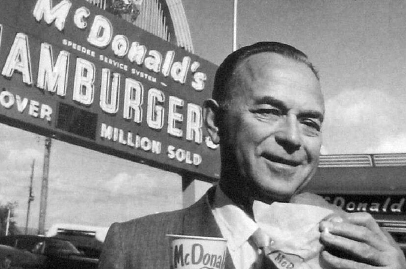

|
Nuestra Historia |

En 1954, un hombre llamado Ray Kroc descubrió un pequeño restaurante de hamburguesas en California, y escribió la primera página de nuestra historia. Desde el humilde comienzo como un restaurante pequeño hasta hoy, cuando nos sentimos orgullosos de habernos convertido en uno de los principales minoristas de servicio de comida del mundo con más de 36,000 restaurantes en más de 100 países.